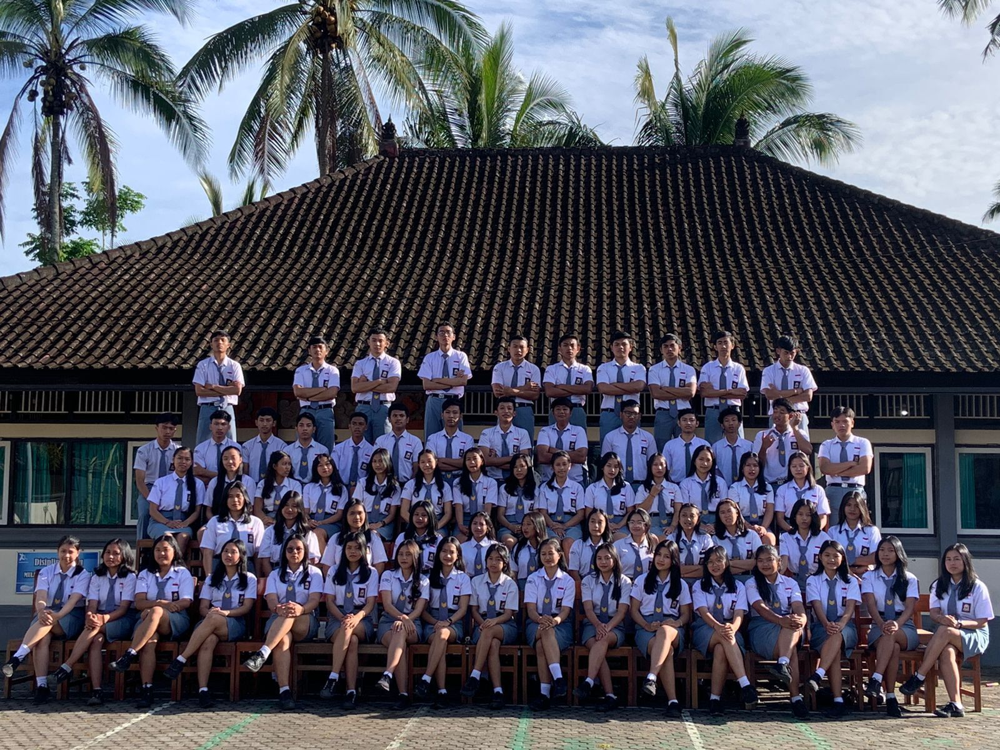

Profil Sekolah
SMA Negeri 1 Baturiti berdiri sejak tahun 1990, lebih tepatnya pada tanggal 1 April 1990. SMA Negeri 1 Baturiti merupakan satu-satunya SMA Negeri di kecamatan Baturiti. Sama seperti sekolah SMA pada umumnya di Indonesia yang memiliki tiga jenjang atau tingkat, mulai dari kelas X, XI, sampai XII.
| Nama Sekolah | : | SMA NEGERI 1 BATURITI |
|---|---|---|
| NPSN | : | 50101131 |
| Status | : | Negeri |
| Akreditasi | : | A |
| Telepon | : | (0368) 2301064 |
| Alamat | : | Br. Puseh, Ds. Perean, Baturiti, Tabanan-Bali |
| : | sman1baturiti@gmail.com |

Visi Sekolah
Beriman, Berbudaya, Cerdas dan Berprestasi
- Memiliki kesadaran spiritual yang kokoh
- Sopan santun dalam berfikir, berucap dan berbuat
- Berkepribadian yang terpuji dalam kehidupan bermasyarakat
- Berkemampuan mengembangkan potensi diri
- Berprestasi dalam bidang akademik dan non-akademik